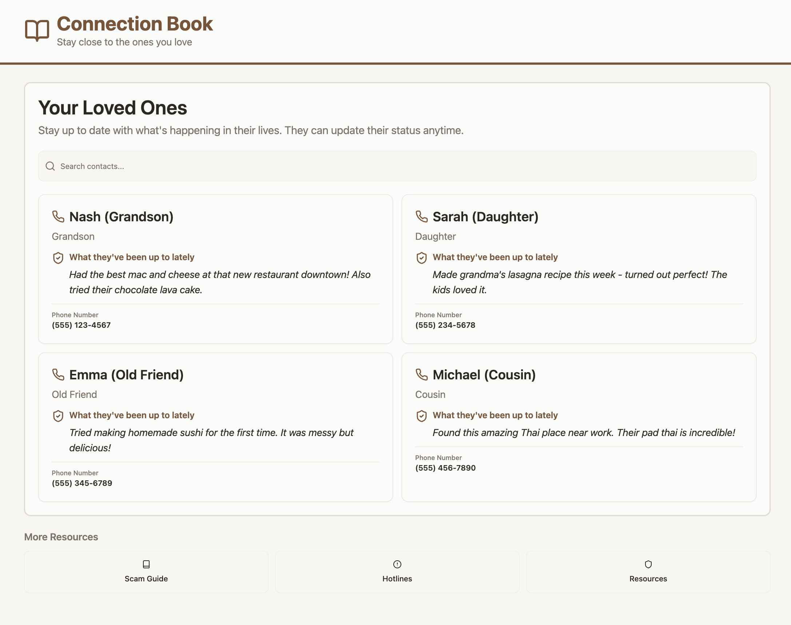

TheVault.

TheVault. is a digital phonebook designed to protect elderly users from impersonation scams. Built for Sparkathon 2025 — a designathon hosted by Pomona Ventures with 30 competing teams — it gives elders a familiar, trustworthy way to verify the identity of someone claiming to be a loved one before handing over money, information, or access.
The Problem
Our user research — surveys and interviews conducted as part of a Human-Centered Design process — revealed a clear and sobering pattern: elderly people are highly vulnerable to digital impersonation scams where someone poses as a family member or friend in distress. The scam works because the target has no easy way to verify who they're actually talking to. They want to help, they're under pressure, and the tools available to them (calling back, texting) can themselves be spoofed. TheVault. gives them a simple, trusted reference point to check first.
How It Works
The app functions like a personal phonebook the user has built themselves, populated with photos, contact details, and notes about their real loved ones. When a suspicious call or message comes in — someone claiming to be a grandchild, a friend, a family member — the user can open TheVault., look up that person, and verify details before responding. The design prioritizes clarity and simplicity above everything: large text, minimal steps, and a UI that feels familiar rather than intimidating to someone who didn't grow up with smartphones.
My Role
I contributed across three areas: programming the demo, conducting user testing to validate our design decisions against real feedback, and visual design. The full team followed a Human-Centered Design framework throughout — we ran surveys and interviews in the research phase, generated and filtered a large set of concepts during ideation, built and tested prototypes iteratively, and converged on the final product through multiple rounds of feedback.
Try the demo View our final presentation
Through this project I've learned and practiced:
- Human-Centered Design — user research through surveys and interviews, iterative prototyping, and feedback-driven design
- User testing — running structured tests to validate design decisions and surface usability issues
- Designing for accessibility — building an interface specifically for a non-technical, elderly audience
- Visual design for a consumer-facing product with a clear emotional tone
- Rapid prototyping under designathon time constraints with a cross-functional team
- Presenting a product and its research rationale to a panel of judges